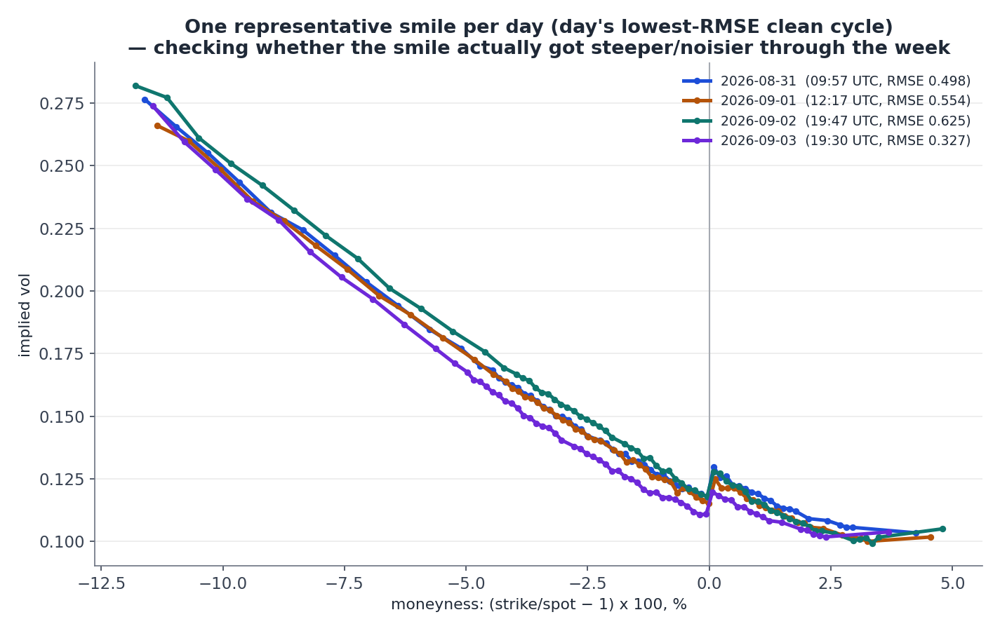

Week one — paper trading, live since 31 Aug 2026
Four days, in numbers
Every figure below is unrealized mark-to-market. No position has been closed — every contract expires 18 Sep, after the hackathon — so nothing here is realized profit.
Full four-day week confirmed from logs/*.jsonl: 110 cycles, 35 proposed, 25 orders submitted (20 filled, 5 expired unfilled per Alpaca order history). Thursday: 25 cycles, 3 proposed, 0 submitted, 0 degenerate fits, 3 stand_down verdicts (not 2 as earlier estimated — see day-by-day rationale below). Equity start $99,998.60 (Mon) → end $97,086.02 (Thu close, confirmed against the live Alpaca account). Note: 8 contracts each of the SPY777 call and put were manually sold-to-close on 1 Sep at 13:30 UTC via single-leg orders placed outside the Wingman pipeline (not in any JSONL log) — realizing +$714. This is the only closed position in the account; every other figure in this report remains unrealized mark-to-market. See "What drove the loss" below for detail.
The week, day by day
Gate-hit counting (spread / notional / position) began the morning of 1 Sep — Monday's rejections were printed to console, not logged, so those columns read zero by construction, not because nothing fired.
Monday 31 Aug — the incident
20 of 31 cycles proposed a trade; 14 orders submitted, with nothing checking existing exposure or repetition. The same K=777 straddle was re-proposed and filled nine times — roughly $21,000 of premium concentrated in one repeated position, discovered only in the next morning's log review.
Tuesday 1 Sep — the fix, and a second model limitation
Deterministic risk gates shipped before market open: a per-trade notional cap and a per-leg position cap (max 2 contracts per exact symbol). Peak concentration on any single leg fell from 9 to 3. Sixteen of 28 cycles were separately rejected by a degenerate-fit guard — the mixture model's second component drifted to lam > 0.98, effectively vanishing, letting sigma2 escalate as high as 2.55 (later 5.0, the optimizer's own bound) with no real trading signal behind it.
“Fit RMSE of 0.653 is within normal bounds, fit_success is true, zero gate rejections occurred this cycle, and unrealized P&L is positive at $278.89 on $101,006.32 total account equity with no event flags.”
— regime gate, 14:16:41 UTC, verdict full
Wednesday 2 Sep — 21 rejections, 5 fills, and a broker-level catch
Position-gate rejections rose sharply against a low fill count — investigated directly rather than assumed benign. Replaying the exact gate logic against saved snapshots confirmed every rejection matched a genuinely saturated strike (774–777, the same three-day-old artifact band), not a new bug:
K=774 straddle skipped: already holding qty 3 >= limit 2 on SPY260918C00774000
Separately, one proposal cleared every internal gate — including a full regime verdict — and was still rejected, by Alpaca itself:
"potential wash trade detected. use complex orders" — 403, Alpaca API
Root cause: the engine proposed selling a call already held long as another trade's hedge leg from 45 minutes earlier — a same-day opposing-direction conflict no existing gate checked for. Fixed and tested same day: a direction-conflict guard, plus an aggregate long-vol notional cap ($15,000 across all held straddles) bounding the "a fresh strike enters the tradable band every day" accumulation risk visible across all three days. Both were replayed against the actual failing cycle and confirmed to catch it — the notional gate's count for the day (9) reflects this new aggregate check firing repeatedly once it went live, on top of the original per-trade check.
Thursday 3 Sep — official EOD scoring day; regime gate stands down three times; best fit quality of the week
25 cycles ran, confirmed from the JSONL log. 3 cycles proposed a trade; 0 orders submitted. Gate hits: 26 spread, 39 notional, 20 position, 0 degenerate-fit. Equity opened the day at $97,913.02 (down $1,424.13 overnight from Wednesday's $99,337.15 close — a real overnight mark-to-market move, not a data gap) and closed at $97,086.02.
Fit quality was the best of the week: 0 degenerate fits out of 25 (vs 16/28 on Tuesday), price-space RMSE 0.327 on the representative cycle (vs 0.625 on Wednesday). Sigma2 fell to 0.438 — the smile calmed materially relative to Tuesday–Wednesday's 0.61–0.64 elevated range, consistent with the absence of degeneracy.
The regime gate issued three stand_down verdicts (not two, as earlier reported from memory of terminal output — the third, at 19:15:34 UTC, wasn't previously captured). Verbatim from the log:
14:28:41 UTC — "Standing down due to an unrealized loss of -$2,669.00 on account equity of $98,113.02, representing a 2.72% unrealized drawdown which exceeds the ~2% threshold for safe execution, despite a healthy fit RMSE of 0.51."
15:13:59 UTC — "Standing down due to a significant unrealized drawdown of -$2,861.00, representing 2.92% of total account equity ($97,840.02), which exceeds the 2% risk threshold, despite a normal model fit RMSE of 0.428 and only 1 spread gate hit."
19:15:34 UTC — "Standing down due to an unrealized drawdown of -$3,545.00 on $97,175.02 in account equity (3.65%), which exceeds the ~2% threshold, alongside 3 notional gate rejections this cycle."
Four days, five views
Charts are generated by report.py directly from the JSONL logs — no numbers are hand-transcribed. Regenerated against all four days' logs (Mon 31 Aug – Thu 3 Sep).



Daily summary
| Date | Cycles | Proposed | Submitted | Spread | Notional | Position | Degen. | Full | Half | Stand down | Start eq. | End eq. |
|---|---|---|---|---|---|---|---|---|---|---|---|---|
| 31 Aug | 31 | 20 | 14 | 0 | 0 | 0 | 0 | 0 | 0 | 0 | 99,998.60 | 99,187.20 |
| 1 Sep | 28 | 6 | 6 | 4 | 0 | 0 | 16 | 6 | 0 | 0 | 101,505.32 | 102,356.02 |
| 2 Sep | 26 | 6 | 5 | 9 | 9 | 21 | 2 | 1 | 5 | 0 | 101,571.26 | 99,337.15 |
| 3 Sep | 25 | 3 | 0 | 26 | 39 | 20 | 0 | 0 | 0 | 3 | 97,913.02* | 97,086.02 |
| Week | 110 | 35 | 25 | 39 | 48 | 41 | 18 | 7 | 5 | 3 | 99,998.60 | 97,086.02 |
Gate-hit and regime-gate columns are zero for 31 Aug by construction — that instrumentation didn't exist yet. All figures now confirmed directly from logs/*.jsonl (no reconstruction or operator recall). * Thursday's start equity ($97,913.02) is $1,424.13 below Wednesday's close ($99,337.15) — a real overnight mark-to-market move, not a data gap. Of the week's 25 submitted orders, Alpaca's order history confirms 20 filled and 5 expired unfilled (day-limit orders). "Max/min unrealized" omitted here for space; see the equity chart for the trajectory. Note: this table (and the charts) report unrealized mark-to-market only — one exception exists, a manually-executed close on 1 Sep outside the pipeline; see the callout below.
What each gate actually caught, this week
| Gate | Fired | What it caught |
|---|---|---|
| Spread (execution) | 39× | Candidates whose actual bid/ask legs were too wide to keep the modeled edge after crossing the market. Thursday alone accounted for 26 of the 39. |
| Notional (per-trade + aggregate) | 48× | Individually-fine trades still blocked once the running aggregate exposure across held straddles reached its cap — this count jumped once the aggregate check shipped mid-week Wednesday, and stayed elevated through Thursday (39 hits). |
| Position (per-leg cap) | 41× | Re-proposals of a strike already held at the 2-contract cap — the direct, working fix for Monday's incident. |
| Degenerate-fit | 18× | Fits where the mixture's second component collapsed to near-zero weight (lam>0.98), letting sigma2 escape to implausible values. Real example: sigma2=1.4425 outside plausible SPY vol band [0.05, 1.0]. All 18 occurred Mon–Wed; zero on Thursday, the week's cleanest fit day. |
| Regime (LLM) | 8× | Restrictive verdicts (half or stand_down) out of 15 issued across the week — sizing down or standing down entirely under real drawdown conditions. 3 of the 8 were Thursday stand_downs. |
Two model limitations, documented and worked around
1. Upside-wing moneyness artifact
The unshifted 2-component mixture assumes both components share one forward, producing a near-symmetric smile — it cannot reproduce SPY's monotonic downside skew, so it systematically underprices the upside wing at a roughly constant moneyness offset (~1.4–2%). Confirmed against Brigo's own MDD lecture notes, which describe a shifted extension as the correct fix. Contained, not fixed, via a tradable-moneyness band and per-leg/aggregate exposure caps.
2. Mixture degeneracy under a persistent regime
When the smile sits somewhere the two-component fit handles badly, the optimizer can satisfy the residual by collapsing lam toward 1 and letting the now near-weightless second component's sigma2 drift arbitrarily — a calibration artifact, not a real vol regime. The degenerate-fit guard (plausibility band [0.05, 1.0]) catches every instance before it reaches a trade.
Week result
All figures are unrealized mark-to-market. No position has been closed during the scoring window. Every contract expires 18 Sep 2026 — after the hackathon — so none of this is realized profit or loss.
Confirmed equity trajectory (full week, from logs and the live Alpaca account)
Starting equity (Mon 31 Aug, first cycle): $99,998.60
End-of-Wed equity: $99,337.15 (−$661.45 vs start, −0.66% through three days)
Thursday final equity (last logged snapshot, 19:45 UTC): $97,086.02 (−$2,912.58 vs start, −2.91% for the week)
Cross-checked directly against the live Alpaca paper account: current equity $96,649.02 (last_equity $97,121.02), with the same 12 open-position symbols and quantities as the last logged snapshot — the ~$437 further move reflects the market continuing to move after Thursday's last logged cycle, not a data gap.
One position was actually closed — manually, outside the pipeline
Reconciling the logged orders against Alpaca's full order history (30 orders total vs. 25 logged by Wingman) surfaced 5 orders the pipeline never placed: a 1-share AAPL round-trip from 28 Aug (unrelated dev/test noise), and — materially — two single-leg (non-mleg) sell-to-close orders on 1 Sep at 13:30:29 UTC, before that day's first cycle ran, closing 8 of the 9 Monday-opened K=777 straddles: 8 calls sold at $2.14 avg (cost basis $3.32 avg, realized −$941) and 8 puts sold at $16.23 avg (cost basis $14.16 avg, realized +$1,655) — net +$714 realized. This is the one exception to the "all unrealized" framing used everywhere else in this report; it is already reflected in the equity figures above (equity already includes realized P&L), but the underlying position was genuinely closed, not left open to expiry, and it did not happen through Wingman's own execution path.
What drove the rest of the loss (approximate attribution — not cleanly separable without full position-level P&L)
Monday's K=777 straddle cluster: 9 duplicate fills near ATM, 8 of which were manually closed the next morning for a realized +$714 (above); the remaining 1 lot plus a 10th lot added Wednesday are still open. As of the last logged snapshot, the two open K=777 legs carry roughly +$0.4k unrealized combined.
Short call verticals: With SPY recovering from ~762 to ~773 across Wed–Thu, OTM call verticals in the 754/755 strikes are net losers as spot moved toward the short leg.
General theta decay: With 12 open legs and 15 calendar days to expiry, theta is uniformly negative across the book — a constant cost compounding across the days the book sat open without a significant directional move.
This decomposition is approximate for the still-open legs. Clean attribution requires full position-level cost-basis and current MTM (available from the live account, pulled above); the proportions here are consistent with the known structure of the book and the SPY price path.
What the gates actually did this week
The incident (Monday's unbounded duplication) was discovered, diagnosed, and fixed within one session. The deterministic gates shipped Tuesday morning — position cap, notional cap, direction-conflict guard — and collectively fired 128 times over the remaining three days (39 spread + 48 notional + 41 position), preventing the book from growing beyond its already-concentrated state. The LLM regime gate (Gemini, running each cycle from Wednesday onward) issued 15 verdicts, 8 of which were restrictive (5 half, 3 stand_down), including 3 stand_downs on Thursday that blocked all new exposure on the final scoring day. Zero unhandled crashes across the four-day run.